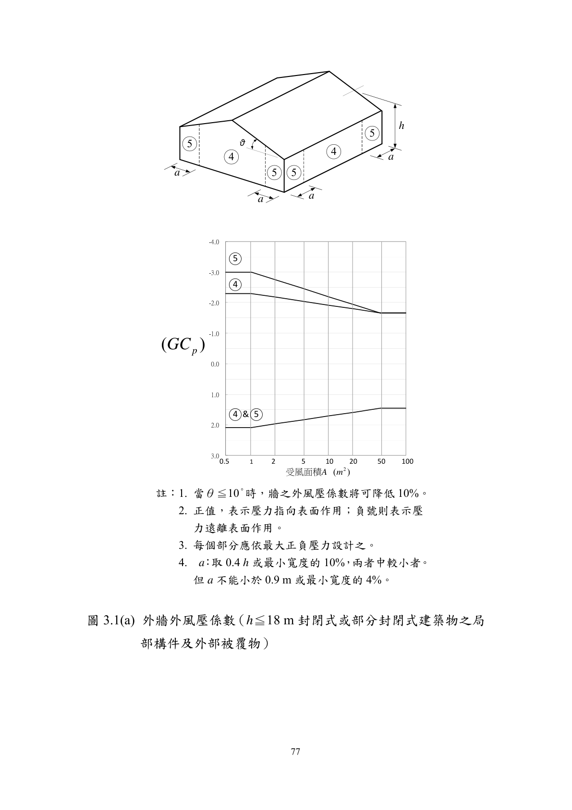

建築物基本資料 主輸入
`h > 18 m` 且為外牆時，正壓採 `q(z)`；其餘採 `q(h)`
構材條件 區域設定
僅屋面模式使用；圖 3.1 採 ≤7°，圖 3.2 採 ≤10°
構材跨距 × 有效寬度，最小取跨距²/3
僅 `h > 18 m` 且部分封閉時使用；依規範 3.2，正內壓可採 `q(zh0)`
規範適用檢查
尚未檢核
設計採用表
| 項目 | 採用值 (kgf/m²) |
控制區域 | 說明 |
|---|
控制區域明細
控制區域
—
控制區域絕對值
—kgf/m²
控制區域正壓 p+
—kgf/m²
控制區域負壓 p−
—kgf/m²
GCp (正)
—
GCp (負)
—
GCpi 內壓
—
屋頂高速度壓 qh
—kgf/m²
構材標高速度壓 qz
—kgf/m²
正內壓速度壓 qh0
—kgf/m²
規範示意圖
對應區域示意
規範截圖

各區域風壓總覽 全部區域
| 區域 | GCp (正) | GCp (負) | p+ (kgf/m²) |
p− (kgf/m²) |
|---|
控制區域逐步計算 計算書
區域示意與說明 規範路線
外牆區域
區域 5 = 角隅寬度 a = min(0.1·B, 0.4·h) 但 ≥ 1 m 或 0.04·B
區域 4 = 牆面其餘部分
屋面區域 (低坡度)
區域 1 = 屋面內部 ｜ 區域 2 = 屋面邊緣帶 (寬 a) ｜ 區域 3 = 角隅 (a × a)
區域 5 = 角隅寬度 a = min(0.1·B, 0.4·h) 但 ≥ 1 m 或 0.04·B
區域 4 = 牆面其餘部分
屋面區域 (低坡度)
區域 1 = 屋面內部 ｜ 區域 2 = 屋面邊緣帶 (寬 a) ｜ 區域 3 = 角隅 (a × a)
h ≤ 18 m: p = q(h) · [(GCp) ± (GCpi)]h > 18 m 外牆正壓: p+ = q(z) · (GCp,pos + GCpi)h > 18 m 部分封閉正內壓: p− 可採 q(zh0) · GCpi最大負壓:
p− = qh · (GCp,neg − GCpi)
⚠ 本工具依規範第三章圖 3.1 / 圖 3.2 簡化，僅適用封閉式或部分封閉式建築物之外牆與低坡度屋面；不含開放式建築、女兒牆及特殊遮蔽折減。